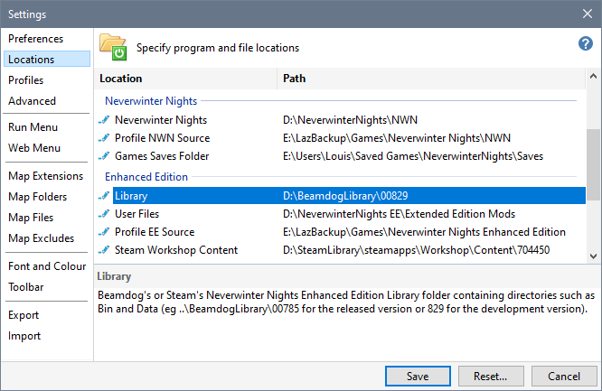
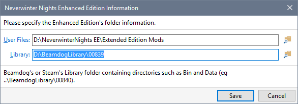
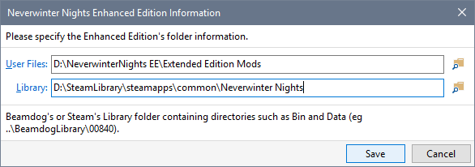

If you were using Beamdog's Enhanced Edition and have installed the Steam version, you can specify Steam's Library folder on the Locations page in Advanced Settings.
Steam only works with the default User Files folder in Documents (ie ...\Documents\Neverwinter Nights) unless you enable "Use NIT to manage Steam's Workshop Content" on the Preferences page in Advanced Settings.

 Edit Icon.
Edit Icon.

Specify program and file Locations